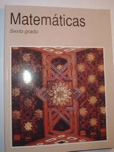

TEMAS SELECTOS DE MATEMATICAS II
TEMAS SELECTOS DE MATEMATICAS II
Temas Selectos de Matemáticas II es una asignatura de bachillerato del Colegio de Bachilleres que se imparte en el sexto semestre cuenta con 7 progresiones,
dentro de todos los grupos como materia general. Es parte del plan de estudios
en esta materia nos ayuda a saber de cierta manera lo visto anteriormente en semestres es decir lo basico(algebra y suceciones aritmeticas y geometricas,etc.)
y actualmente nos muestra principios del calculo integral es decir las funciones y relaciones para conforme pase el semestre vayamos avanzando al calculo integral
para ser mas especificos en el segundo parcial, se escucha dificil y probablemente lo sea pero si dominas la algebra no se te hara muy complicado es cuestion de tener
un buen uso de tu cabeza tener esa resolucion de problemas para que no te perjudique ese tema, esta materia lo que busca es que nosostros los alumnos podamos resolver ciertos problemas complejos, no memorizarlos
sino entender como funciona y de donde sale cada termino o ecuacion planteada con el cual en la vida laboral te ayude a ver como es el funcionamiento de todo , una recomendacion
es que no te limites en solo memorizarlo ponte a repasar, no copies entiende las matematicas no son dificiles es cuestion de adaptarse las metas que tiene el libro son:
la ejecucion de calculo y logaritmos para resolver problemas matematicos, de la ciencia y su entorno, observa y obtiene informacion de una situacion o fenomenos
para establecer estrategias o formas de visualizacion que ayuden a entenderlo, describe situaciones o fenomenos empleando rigurosamente el lenguaje matematico y el lenguaje natural
en cuanto a las subcategorias tenemos elementos aritmeticos elgebraicos, elementos geometricos, elemenos variacionales, pensamiento intuitivo, pensamiento formal,
uso de modelos estrategias heuristicas y ejecucion de procedimientos no rutinarios, registro escrito, simbolico, algebraico y iconografico todo esto es lo que nos
proporcionaria el libro de temas selectos de matematicas II por cierto el maestro que nos imparte esta materia es el MTRO. mario jesus mares escobedo
menu
